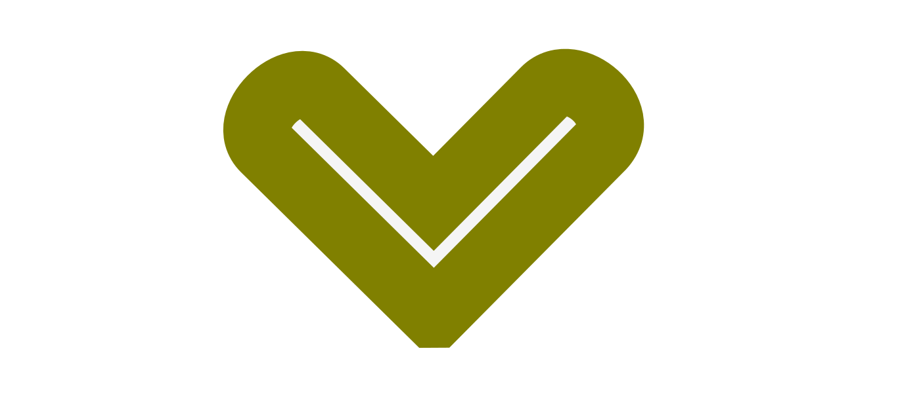

Miguel Pardo


Learning to code is an adventure - There’s endless paths to take and it’s easy to get lost, frustrated, and even feel discouraged to learn. I’m an aspiring web developer currently learning to code on my own. I grew up in Long Beach California. Sleep deprivation is my greatest weakness when building a project. I tend to lose track of time whenever I build something new. I hate leaving a project unfinished; That is to the point to where I can be content with it. The more I learn about programming, the more I realize I don’t know. I spend all my free time in coffee shops learning to code when I’m not at work or helping out my family.
Coding and creating amazing things were on my mind since High School. I was introduced to html while in the engineering program in High School. It was a lot of fun and I went beyond what was expected of me. Shortly after, I fell into a video game addiction that brought me down considerably. My video game addiction did not end until my final year of High School. Unfortunately, by that time I was focused on other things and didn’t attempt to learn to code on my own. It wasn’t until the end of 2015 that I decided to learn to code. Programming meant getting a computer science degree. Graduating from high school, I saw that as a waste of time. I needed to start a business fast and make money. Once I did that, I’d be able to pursue other interests I had. This included programming and electrical engineering. I spent the first four years of college on work, taking a couple of business classes, and trying to start businesses. Throughout those years, I tried to own a Subway restaurant, a clothing company, and a car rental business through the use of an app. I also sold skateboards,bearings, and light emitting diodes attached to different objects. By the time I was 22 years old, I realized I needed to find a reliable way to make income, so I took school seriously. I found a two year program that related to electrical engineering. I joined the electrical program at Long Beach City College. I was also part of the robotics team. Having taken an introductory class to programming during my third semester, I felt compelled to build an app when an opportunity arose. A close friend of mine and I came up with an idea for a car rental company through the use of an app. I wasn’t able to build it and we focused on something different. That friend and I came up with a different app; A social media app. It was the app that would rival Facebook. I dropped out of the electrical program when I was a month away from graduating because of this app. It didn’t hurt much to drop out; I realized programming was what I really wanted to do for the rest of my life. Unfortunately, I wasn’t able to build that app at the time, but I definitely will someday. My friend and I eventually built an app known as Rave Candy which can be found in the Playstore. I also have a web version of it on my portfolio, though it will look different in a screen with a width greater than 900 pixels. StoryQuest which can also be found in my portfolio was a simple, fun, and challenging word based game to make. My portfolio alone was a challenge to build, but the greater the challenge the more knowledge there is to gain. I enjoy the learning process by building. I’m now looking into ways to expedite my learning process. I’m currently applying to coding bootcamps. A coding bootcamp will allow me to excel in my programming adventure. I’ve read great and terrible things about bootcamps. I believe that the ones that truly succeed in the bootcamps are the ones that put in the effort and really have a passion for programming. I’m excited to be surrounded in an atmosphere with peers eager to learn. I’ll be able to collaborate with peers and instructors that will help me gain an understanding of programming much faster than I can on my own.
Feel free to contact me through e-mail or phone. I'm currently learning to be an awesome programmer!